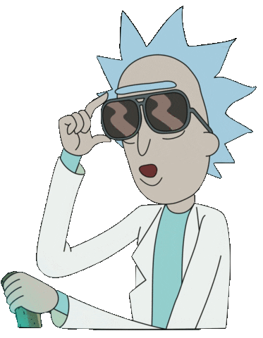

Aussi étonnant que cela puisse paraitre, l’écran sur lequel vous lisez cet article : ordinateur, smartphone, tablette, que sais-je, ne produit aucune lumière jaune ! Tout n’est qu’illusion !
Un objet jaune autour de nous absorbe toutes les couleurs de la lumière, à l'exception du jaune, qu'il renvoie. Cette lumière jaune est renvoyée vers notre œil qui nous fait voir du jaune.
Afin de capter ces couleurs, le fond de notre œil est tapissé de récepteurs sensibles à la lumière : les cônes.
Non, pas ceux-ci... mais plutôt ceux-là :
Ces derniers sont de trois types, chacun sensible à une couleur en particulier :
les cônes S sont sensibles au bleu,
les cônes M au vert,
les cônes L au rouge.

Ainsi, la lumière réfléchie par un objet jaune active nos cônes L et nos cônes M, donc le cerveau reconstitue du jaune.
Cependant, votre écran, et plus particulièrement ses pixels, ne produisent que du rouge, du vert et du bleu. Un pixel étant composé de ces trois couleurs à la fois :
Alors comment fait-on pour voir du jaune Jamy ? Et bien Fred, c’est très simple ! Figure-toi qu’il est très facile de mentir à notre cerveau, il suffit d'utiliser la synthèse additive (ce mauvais souvenir de collège). En superposant du rouge et du vert, on obtient du jaune :

Il suffit donc d’envoyer un peu de lumière verte et de lumière rouge pour que notre cerveau croit reconstituer du jaune. L’exemple sur un pixel jaune vu de très près :
Alors, doit-on toujours croire ce que l’on voit ?
Wikipédia, « Pixel », URL.
|  | Blog créé par Daphné Pelat, dans le cadre du cours de création de site web de Liana Ermakova. Icons made by Freepik from www.flaticon.com. |